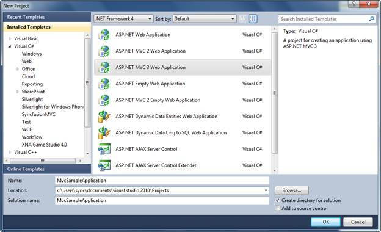
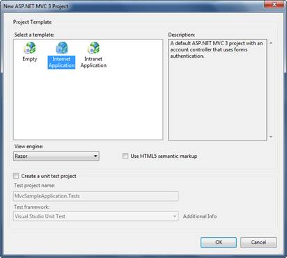
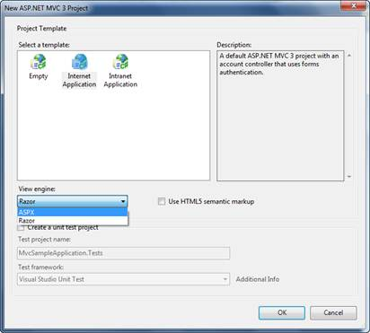

1. On the File menu, click New Project.
The New Project dialog box displays.

Figure 30: New Project Dialog Box
2. In the upper-right corner, make sure that .NET Framework 4.0 is selected.
3. Under Project types, expand either Visual Basic or Visual C#, and then click Web.
4. Under Visual Studio installed templates, select ASP.NET MVC 3 Web Application.
5. In the Name box, enter MvcSampleApplication.
6. In the Location box, enter a name for the project folder.
7. If you want the name of the solution to differ from the project name, enter a name in the Solution Name box.
8. Select the Create directory for solution.
9. Click OK.
The new ASP.NET MVC3 Project dialog is displayed.

Figure 31: Create Unit Test Project Dialog Box
10. Select ASPX from View Engine dropdown.

Figure 32: Selecting a view engine
11. Click OK.
The new MVC application project and a test project are generated. (If you are using the Standard or Express editions of Visual Studio, the test project is not created)